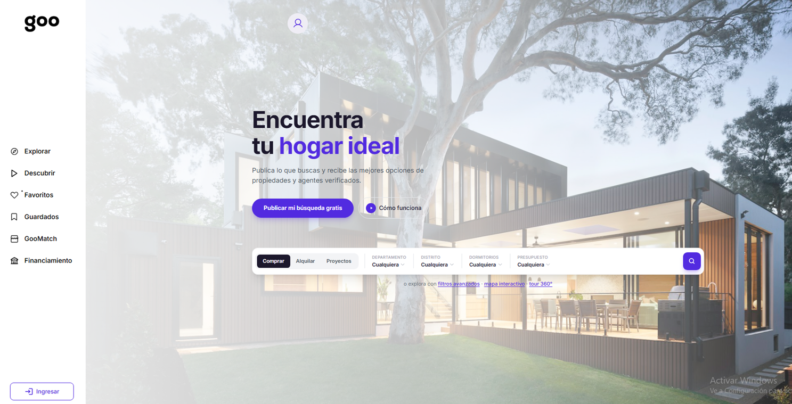
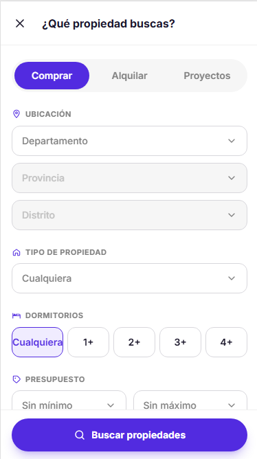
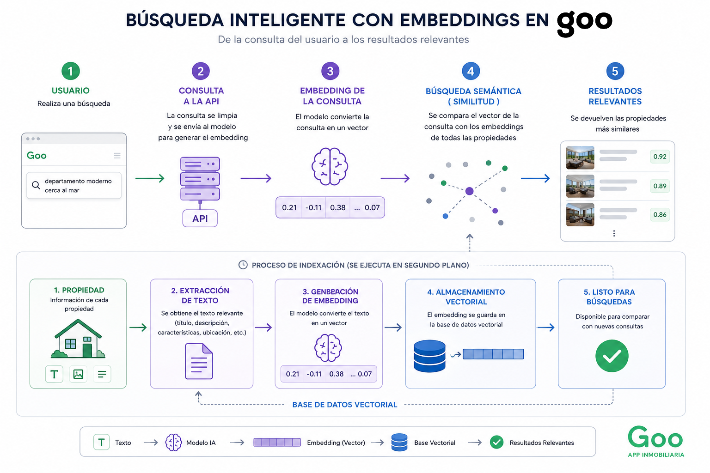
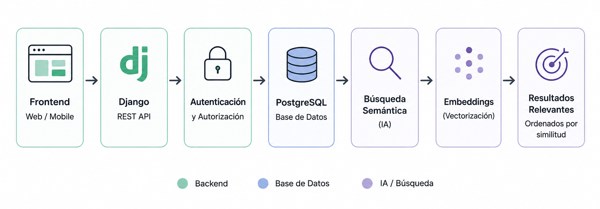
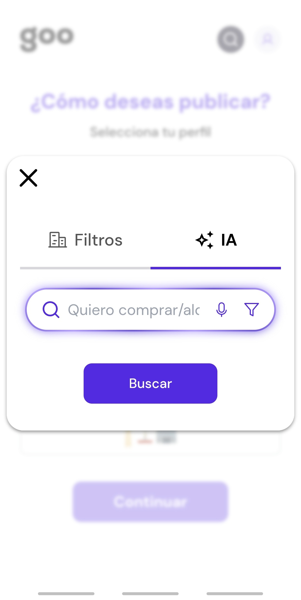
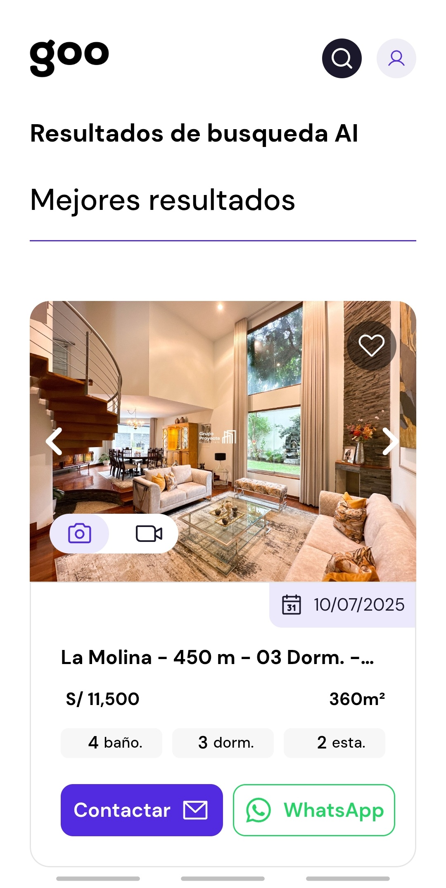

INTRODUCCIÓN
Goo App es una plataforma inmobiliaria que permite explorar propiedades mediante categorías, filtros y búsqueda inteligente.
Participé como Backend Developer, desarrollando APIs, gestión de datos e integración de un sistema de búsqueda semántica mediante embeddings.

FUNCIONALIDADES
- 01. Exploración y gestión de propiedades.
- 02. Búsquedas y filtros avanzados.
- 03. APIs REST.
- 04. Autenticación y gestión de usuarios.
- 05. Semantic Search con IA.
- 06. Generación de embeddings mediante procesos batch.
EXPLORACIÓN DE PROPIEDADES
La plataforma organiza las propiedades en categorías como Proyectos, Alquiler y Compra, permitiendo acceder rápidamente a la información disponible.
Desde el backend se desarrollaron APIs para consultar, filtrar y estructurar los datos antes de enviarlos al frontend.

EL RETO
Las búsquedas tradicionales dependen de coincidencias exactas entre las palabras utilizadas por el usuario y
la información almacenada.
Esto limita los resultados cuando una consulta utiliza palabras diferentes para expresar una misma intención.
La solución: implementar una búsqueda capaz de comprender el significado de la consulta, no solamente sus palabras.
BÚSQUEDA INTELIGENTE CON IA
Se desarrolló un sistema de Semantic Search utilizando embeddings.
La información de las propiedades se transforma previamente en vectores mediante un proceso batch.
Cuando el usuario realiza una consulta, esta también se convierte en un embedding y se compara con los
existentes para encontrar las propiedades semánticamente más cercanas.
Consulta → Embedding → Similitud semántica → Resultados relevantes

ARQUITECTURA BACKEND
El backend fue desarrollado con Django REST Framework y PostgreSQL, utilizando una arquitectura modular para gestionar usuarios, propiedades y búsquedas.
La búsqueda semántica se integró directamente en la API, conectando la lógica de negocio con el procesamiento de IA.

Technology Stack
RESULTADOS
Goo App permitió integrar desarrollo backend e inteligencia artificial dentro de una plataforma inmobiliaria
real.
El proyecto combinó APIs REST, PostgreSQL y Django con búsqueda semántica mediante
embeddings, mejorando la forma en que los usuarios pueden encontrar propiedades según el significado
de sus consultas.


- 01. Búsquedas con mayor relevancia semántica.
- 02. Gestión estructurada de propiedades y usuarios.
- 03. APIs organizadas para el consumo del frontend.
- 04. Procesamiento optimizado de información.
- 05. Integración de IA dentro del backend.
- 06. Arquitectura preparada para futuras funcionalidades.